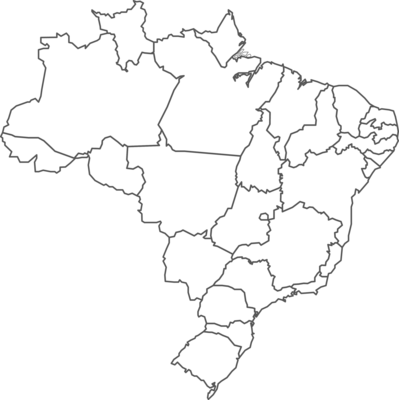

Mapa ilustrativo com estados destacados
Economia em SP e RJ
Últimas notícias sobre o mercado nas regiões.
Conteúdo de Verão: Clima e Reportagens
Destaques das capitais do país.
Vale Aécsio: Mudança na política regional
Veja análises e entrevistas exclusivas.
Últimas Notícias
Equipe debate ações das mulheres no Nordeste
Matéria sobre políticas sociais e economia.
Esporte local ganha destaque nos campeonatos
Times regionais e torcidas movimentam o país.